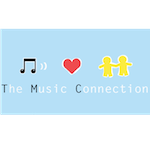
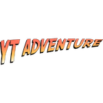

|
marvin zhang |
i'm marvin, and i'm a third year computer science student at the University of California, Berkeley.
most of my time is spent on CS in some form or another. in addition to classes, i am an undergraduate research apprentice in Professor Pieter Abbeel's Robot Learning Lab, and i work primarily with PhD student John Schulman. i am also an undergraduate student instructor (UGSI, or TA) for CS 61A, the introductory computer science course at Berkeley.
apart from school and work, i spend a lot of my time listening to, sharing, and teaching music. i currently serve as the president of The Music Connection, a UC Berkeley club that provides free music tutoring to children in the Berkeley community. i also play violin in the UC Berkeley Symphony Orchestra, though i'm taking this semester off. my other passions include running (every now and then), binge watching tv shows, and every type of asian food.
if you'd like to contact me, shoot me an email at [zhangmarvin at berkeley dot edu].
UGSI, CS 61A (Structure and Interpretation of Computer Programs)CS 61A is the introductory computer science course at UC Berkeley, and teaches many fundamental ideas including functional programming, data abstraction, and object-oriented programming. this course has grown exponentially in enrollment and popularity in recent years. i also taught this course last semester (Spring 2014). |
|
|  |
President, The Music ConnectionThe Music Connection (TMC) is a service club at UC Berkeley that provides free supplementary music tutoring to K-12 students in the Berkeley Unified School District. tutors help run various programs, including in-class, after-school, and private tutoring. for more information, visit our website at tmc.berkeley.edu. |
UC Berkeley UPE Websitethis is the (soon-to-be) new website for the UC Berkeley chapter of Upsilon Pi Epsilon, the national Computer Science honor society. as the former IT chair, i led a committee in designing and building the backend of this website using Django. |
|
|  |
YouTube Adventurethis is a web app written in HTML/CSS/JS that allows you to watch an endless stream of YouTube videos picked from an initial starting video. users have the option to skip videos, pick how related they'd like the next video to be, and rewatch previous videos. |
find more of my projects and contributions on github.